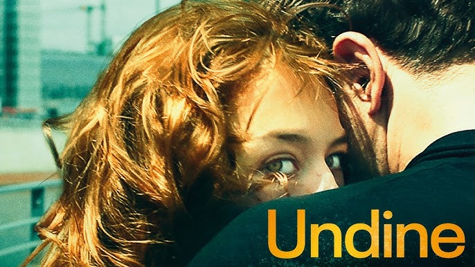

Review - Undine
22/01/2025 Por mais que eu tenha visto apenas dois filmes, talvez esse seja o de maior peso dramático na filmografia do Petzold. Diferente de Phoenix, Undine evita as tenuidades e busca se aprofundar ainda mais nas relações melodramáticas. A protagonista se vê em uma prisão em ser sempre condicionada a relacionamentos, sem saber o que fazer. Um exemplo é quando ela está palestrando pela maquete de Berlin e curiosamente acaba a encontrar a cafeteria em que estava no início, discutindo com o seu namorado. Aquela cafeteria passa a ser o local mais impactante dentro de Undine. Lá, ela acaba a terminar um relacionamento, e mais tarde encontra um novo amor.
Ler mais...